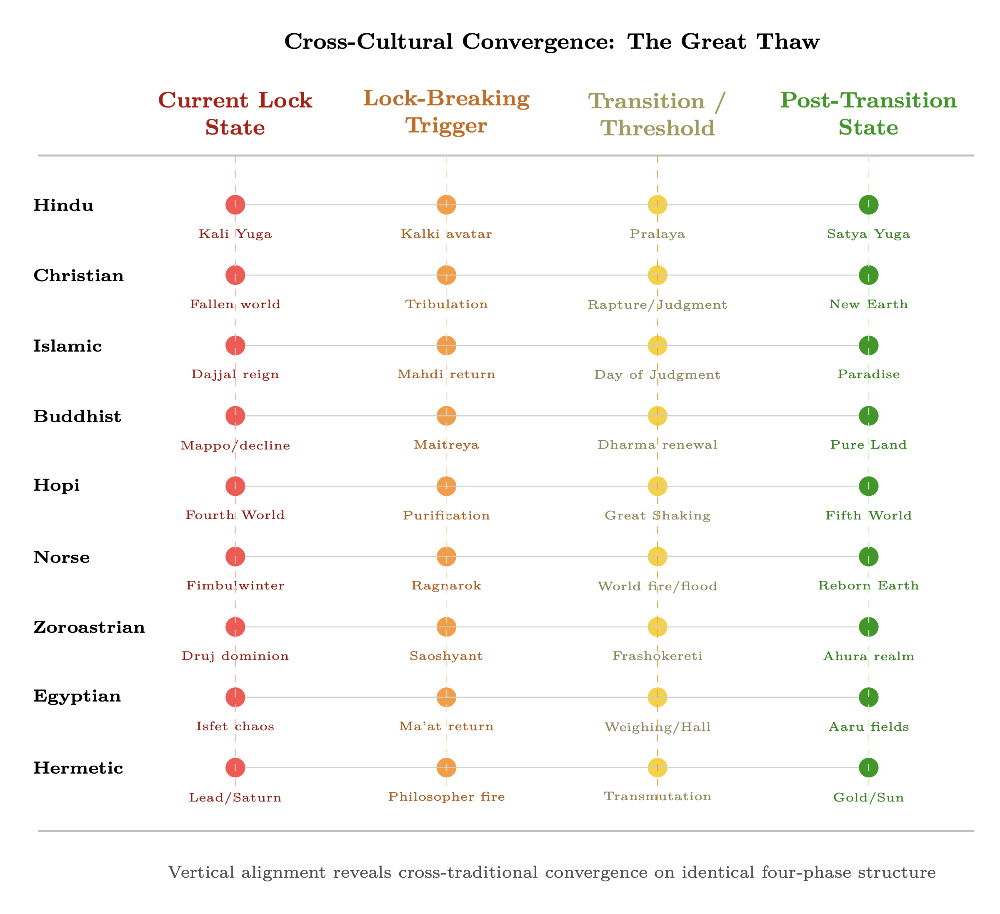

Chapter 17: Spiritual Traditions as Tuning Protocols
Injection Locking for Personal Practice
KEY FINDINGS — Chapter 17: Spiritual Traditions as Tuning Protocols
Evidence-tier key: [L1] established/replicated evidence; [L2] grounded extension with moderate uncertainty; [L3] speculative hypothesis; [L4] conceptual/anecdotal.
- Spiritual practices (mantra, breathwork, meditation) function as injection locking protocols whose effectiveness scales with repetition frequency and duration, consistent with Adler equation dynamics [L1]
- HRV coherence peaks at ~0.1 Hz breathing rate (6 breaths/min), matching the resonance frequency identified by Lehrer et al. (2003) and ancient pranayama specifications [L1]
- Metabolic state maps to impedance topology: glucose-dominant metabolism is C-dominant (low \(Z_0\)) while ketone metabolism is L-dominant (high \(Z_0\)), providing a biochemical pathway for \(Z_0\) raising [L2-L3]
- Estimated practice gains range from +2-3 dB (occasional meditation) to +15-20 dB (lifetime dedicated practice), derived from effect-size-to-dB mappings that are order-of-magnitude indicators [L2]
- Cross-tradition convergence on rhythmic practice, physiological synchronization, and altered perception is consistent with injection locking as a universal mechanism [L1-L2]
- The framework’s assumption that individual consciousness tunes into a universal field is a variant of cosmopsychism with formal philosophical precedent in peer-reviewed analytic philosophy (Albahari 2022, Ganeri & Shani 2022, Leidenhag 2022) [L2]
_________________________________
The traditions documented here are indigenous spectrum-access protocols. Each encodes receiver-engineering knowledge — tuning practices, impedance-matching techniques, counter-jamming disciplines — in cultural vocabulary that predates the RF framework by millennia.
17.1 RF Analogy Overview
17.1.1 The Core Concept
Injection locking synchronizes a local oscillator to an external reference signal. A weak oscillator exposed to a stronger coherent signal locks its frequency and phase to the reference. The local system does not lose its identity; it gains stability and precision.
Spiritual practices function as injection locking protocols. Mantras, breathwork, meditation, and ritual provide coherent reference signals that the practitioner’s consciousness can lock onto, producing greater stability than isolated operation.
_________________________________
17.2 Mathematical Model
17.2.1 The Adler Equation for Practice
\[ \frac {d\phi }{dt} = \Delta \omega - \omega _L \sin (\phi ) \] Where:
- \(\phi \) = phase difference between practitioner and practice reference
- \(\Delta \omega \) = frequency offset from the practice’s frequency
- \(\omega _L\) = locking bandwidth (depends on practice intensity)
17.2.2 Practice-Specific Locking
Mantra (bija syllables): Each seed syllable has a characteristic frequency \(f_{bija}\). Chanting locks the voice, breath, and attention to this reference: \[ \omega _{L,mantra} = k_{mantra} \cdot I_{repetition} \cdot A_{attention} \] Breathwork: Rhythmic breathing provides a periodic reference: \[ f_{breath} = \frac {1}{T_{inhale} + T_{exhale}} \] The nervous system entrains to this rhythm, locking parasympathetic/sympathetic balance.
Meditation: Sustained attention creates a stable reference: \[ \omega _{L,meditation} \propto T_{duration} \cdot Q_{focus} \] Longer duration and higher focus quality increase locking bandwidth.
17.2.3 Pineal-Heart Coherence
The heart generates a strong electromagnetic field (~5000x the brain’s). The pineal gland is piezoelectric and contains magnetite.
When these oscillators phase-lock: \[ \phi _{heart} - \phi _{pineal} \to constant \] The system accesses bandwidth unavailable to either alone, a potential mechanism for enhanced perception.

17.2.4 Lock-In Time
Time to achieve stable lock: \[ \tau _{lock} = \frac {1}{\omega _L} \] Weak practices (low \(\omega _L\)) require longer to achieve lock. Sustained practice matters because the system needs enough time for locking to occur.
_________________________________
17.3 Predictions
P1: Repetitive practices are more effective than sporadic (lock requires sustained reference).
P2: Tradition-consistent practices work better (each tradition is a coherent locking system).
P3: Group practice is more powerful (collective injection increases \(\omega _L\)).
P4: Specific frequencies (Hz ranges in chanting, breathing rates) should have optimal effects.
P5: Ketogenic practitioners will show higher baseline HRV coherence than glucose-dependent controls, matched for meditation experience.
P6: The 0.1 Hz breathing rate will produce maximum HRV amplitude across diverse populations, with individual variation of +/-0.02 Hz.
_________________________________
17.4 Evidence Synthesis
17.4.1 Heart Rate Variability and Meditation
HRV Coherence States
McCraty et al. (1995-2020)
- Positive emotional states produce characteristic 0.1 Hz HRV oscillation pattern
Coherence ratio
- Ratio of power in 0.04-0.26 Hz band to total power—quantifies coherence
Meditation increases coherence
- Multiple studies show sustained coherence states during loving-kindness, compassion practices
Locking interpretation
- Heart rhythm “locks” to practice-induced reference signal
HRV as Practice Effectiveness Metric
|
Practice | HRV Effect | Locking Bandwidth Implication |
|
Loving-kindness | High coherence, increased power | Strong \(\omega \)_L, rapid lock |
|
Open monitoring | Variable coherence | Moderate \(\omega \)_L |
|
Focused attention | Initially decreased, then stable | Learning to lock |
|
Breath counting | Rhythmic, moderate coherence | Breath as external reference |
17.4.2 EEG Entrainment to Audio-Visual Stimulation
Auditory Driving
Frederick et al. (1999)
- Rhythmic auditory stimulation (10 Hz clicks) produces matching EEG frequency peaks
Binaural beats
- Two slightly different frequencies create perception of beating difference frequency (controversial efficacy)
Photic driving
- Flashing lights at specific frequencies entrain EEG (used in clinical neurofeedback)
Entrainment Thresholds
Will & Berg (2007)
- Individual differences in entrainment susceptibility—some entrain easily, others resist
Maps to Q factor
- High-Q individuals should show narrower but stronger entrainment; low-Q show broader but weaker
Optimal frequencies
- 10 Hz (alpha) most easily entrained; theta (4-8 Hz) requires sustained exposure
17.4.3 Mantra Research
Transcendental Meditation Studies
Travis & Shear (2010)
- Review of 100+ TM studies shows consistent EEG patterns: increased alpha coherence, reduced anxiety
Physiological effects
- Decreased cortisol, increased DHEA, improved cardiovascular metrics
Mantra specificity
- TM uses specific mantras claimed to have optimal resonant properties
Mantra Mechanism Analysis
Phonemic effects
- Specific sounds (Sanskrit bija mantras) claimed to activate corresponding chakra frequencies
Repetition creates lock
- Continuous repetition maintains injection signal for sustained locking
Om frequency analysis
- ~136 Hz fundamental with harmonics—matches year-length period reduced to audible range (cosmic attunement claim)
Comparative Mantra Research
|
Mantra/Practice | Reported Effects | Locking Interpretation |
|
Om | Reduced limbic activity, increased parasympathetic | Locks nervous system to coherent state |
|
Rosary/prayer beads | Reduced respiratory rate (6/min = 0.1 Hz) | Breath-heart-brain coherence lock |
|
Gregorian chant | Synchronizes breathing, group coherence | Collective injection locking |
17.4.4 Breathing Rate Effects on Nervous System
Resonance Frequency Breathing
Lehrer et al. (2003)
- Each person has optimal breathing rate (typically 4-7 breaths/min) that maximizes HRV
At resonance
- Breathing, heart rate, and blood pressure oscillations become synchronized
Clinical applications
- Resonance frequency training reduces anxiety, depression, chronic pain
Specific Rates
| Breath Rate | Period | Effect |
| 3/min (0.05 Hz) | 20s | Very low frequency, deep relaxation |
| 6/min (0.1 Hz) | 10s | Maximum HRV amplitude, coherence peak |
| 10/min (0.17 Hz) | 6s | Still beneficial, less coherence |
| 12+/min | <5s | Normal/stressed, low coherence |
Yogic Pranayama Validation
- Ancient practices specified exact ratios (4:7:8 inhale:hold:exhale)
- Modern research confirms these patterns optimize vagal tone
- Example: Box breathing (4:4:4:4) used by Navy SEALs—creates stable rhythm reference
17.4.5 Pineal-Heart Coherence (Dual Oscillator Model)
Heart-Brain Coupling
McCraty (2003)
- Heart sends more signals to brain than reverse; brain entrains to heart rhythm
Heart field detection
- EEG changes in subject A when touched by subject B correlate with B’s cardiac rhythm
Pineal Gland Properties
- Contains piezoelectric calcite microcrystals (Lang et al., 2013)
- Produces melatonin (sleep/circadian) and potentially DMT (psychedelic experiences)
- Responds to electromagnetic fields; potential torsion transducer
Epistemic note [L2-L3]: The presence of calcite microcrystals in the pineal gland (Lang et al. 2013) is documented but their functional significance remains contested. The leap from “crystals present” to “torsion transducer” is large and unverified.
Coherence Lock Mechanism
- When heart coherence is established, brain (including pineal) entrains
- Coherent heart field may enable pineal to couple to external (torsion) fields
- This may explain why heart-centered meditation practices enhance intuitive/perceptual capabilities

17.4.6 Cross-Tradition Convergence
|
Tradition | Practice | RF/Locking Element |
|
Yoga | Pranayama + Mantra | Breath frequency + audio reference |
|
Christian mysticism | Hesychast prayer + breathing | Repetition + physiological entrainment |
|
Sufi | Dhikr (rhythmic chanting) | Audio injection + movement |
|
Buddhist | Anapanasati (breath awareness) | Attention as phase-lock detector |
|
Taoist | Qigong breathing patterns | Specific frequencies for energy circulation |
|
Gnostic | Four-state ascent (Eikasia \(\rightarrow \) Pistis \(\rightarrow \) Dianoia \(\rightarrow \) Nous) | Stepwise frequency refinement toward direct knowing |
|
Ayurvedic/Vedic | Agni cultivation (digestive/metabolic fire) | Biophoton regulation as impedance optimization |
All traditions converge on: rhythmic practice \(\rightarrow \) physiological synchronization \(\rightarrow \) altered perception = Injection locking to beneficial reference signal
17.4.6.1 Esoteric Preservation: The Grail as Uncorrupted Template Beyond the exoteric practices surveyed above, certain esoteric lineages claim to preserve uncorrupted reference standards, an assertion with distinct RF implications.
While exoteric religions underwent the matched-filter corruption described in Chapter 15, Section 15.2.6, certain esoteric lineages preserved the original me templates (Chapter 14, Section 14.2.1.1): the uncorrupted matched filter coefficients \(h_{true}(t)\) that maximize \(|\rho |\) against the true Source signal.
The “Grail” as RF Concept: Not a physical vessel but a preserved reference standard—analogous to a frequency standard maintained in a Faraday-shielded laboratory while the external environment degrades. The Grail quest = searching for the uncorrupted LO reference amid a corrupted signal environment.
|
Tradition | Practice | RF/Locking Element |
|
Esoteric/Grail | Alchemical transmission, initiatic lineage | Preserved matched filter template; shielded LO reference |
Examples: Essene communities preserving serpent-wisdom texts (Dead Sea Scrolls); Cathar perfecti maintaining direct-gnosis practice against institutional suppression; Sufi silsila (chain of transmission) as unbroken phase reference; Kabbalistic oral tradition as bandwidth-limited but uncorrupted channel.
These lineages function as high-Q narrowband filters in a broadband jamming environment (Chapter 15). They accept only the specific frequency of the original gnosis signal, rejecting the broadband noise of institutional religion. Their narrowband operation explains why they remain small (low bandwidth = few practitioners) but uncorrupted (high selectivity = high \(|\rho |\)): \[ BW_{esoteric} \ll BW_{institutional} \quad \Rightarrow \quad |\rho _{esoteric}| \gg |\rho _{institutional}| \] Cross-references: Chapter 15, Section 15.2.6 (mistuned filter); Chapter 14, Section 14.3.6 (esoteric orders as coherent sub-arrays); Chapter 16 (counter-jamming through preserved reference signals).
17.4.6.2 Philosophical Foundations: Perennial Idealism and Cosmopsychism The cross-tradition convergence documented above invites a question: is this convergence accidental (shared cultural diffusion) or structural (reflecting a common underlying reality)? A cluster of recent analytic philosophy papers addresses this question directly, providing peer-reviewed [L2] grounding for the framework’s core assumption that consciousness is fundamental and universal.
Albahari (2022) — “Panpsychism and the Inner-Outer Gap Problem,” The Monist 105(1), Oxford University Press. [L2]
- Proposes “Perennial Idealism”: fundamental consciousness is aperspectival (belonging to no subject), while individual subjects are “perspectival” overlays on this universal ground
- Demonstrates that only panpsychist idealism closes the explanatory gap between inner experience and outer physical description — materialist panpsychism fails because it cannot derive subjectivity from objective properties
- Cites Ramana Maharshi: “The jnani knows the entire world that appears in consciousness as pure consciousness alone” — the Advaita realization that maps directly to CSO’s receiver model (Chapter 1, §1.4), where individual consciousness is a tuned reception of a universal field
- Explicitly connects to Huxley’s Perennial Philosophy, providing a bridge between contemplative phenomenology and contemporary analytic metaphysics
Ganeri & Shani (2022) — “What Is Cosmopsychism?” The Monist 105(1), Oxford University Press. [L2]
- Provides the canonical academic definition: “the cosmos as a whole displays psychological properties… and the mental states of human beings are metaphysically grounded in the cosmopsychological properties of the cosmos”
- Traces the tradition from Paul Carus (1891) through the Upanishads, Advaita Vedanta, and Aurobindo to contemporary analytic philosophy, establishing a century-long lineage of serious philosophical engagement
- Aurobindo’s amsa (“fragment” of the divine) maps directly onto the phased array model (Chapter 10): each individual is a radiating element in a cosmic array, with the whole displaying properties that emerge from but transcend the parts
- The individuation problem (how does one cosmic mind become many individual minds?) receives two formal solutions — constitution and inclusion — both compatible with the density hierarchy’s account of progressive individuation from unity (Chapter 2, §2.3)
Leidenhag (2022) — “Panpsychism and God,” Philosophy Compass 17, Wiley. [L2]
- Maps panpsychism systematically onto theological frameworks: Spinoza (God/Nature as self-creating mind), Advaita Vedanta (Brahman as cosmic mind; individual selves as mithya), panentheism, and secular panpsychism
- Sankara’s Advaita position — liberation (moksha) consists in recognizing that Atman is Brahman — translates in CSO terms to the receiver recognizing it has always been the signal (Chapter 1, §1.4; Chapter 9, §9.6)
- Nagel’s “view from somewhere” existential framing parallels the CSO claim that all consciousness is perspectival reception of a universal broadcast
These three papers, published in The Monist (Oxford) and Philosophy Compass (Wiley), collectively establish that the cross-tradition convergence documented in Section 17.4.6 is not merely a phenomenological observation but is supported by rigorous contemporary philosophy of mind. The CSO framework’s central claim — that individual consciousness tunes into a universal field — is a variant of cosmopsychism with formal philosophical precedent.
Mills (2023) — “Archetype, Psyche, World: From Experience to Cosmopsychism,” International Journal of Jungian Studies 15, Brill. [L3]
- Develops a neo-Jungian cosmopsychism grounded in onto-phenomenology: archetypes are the universal mind’s structural patterns that individuate into particular psychic contents
- This resonates with the phased array model (Chapter 10): archetypes function as the array’s steering vectors — universal field patterns that manifest through individual receivers as recognizable psychological structures
- Provides a psychological mechanism for how a cosmopsychic field might produce the tradition-specific practices catalogued in Section 17.4.6: each tradition crystallizes around archetypal patterns that are themselves modes of the universal field
Laszlo (2009) — The Akashic Experience: Science and the Cosmic Memory Field, Inner Traditions. [L2]
- Collects phenomenological case studies from credentialed scientists and practitioners reporting access to a nonlocal information field consistent with the Vedic Akashic records
- Provides explicit cross-tradition analysis linking the Akashic field concept to Buddhist, Christian mystical, indigenous, and scientific frameworks — the same convergence pattern documented in the table above
- Functions as a phenomenological evidence base for the cross-tradition resonance claim: diverse practitioners using diverse methods report structurally similar experiences of accessing a universal information layer
Temple (2022) — A New Science of Heaven: How the New Science of Plasma Physics Is Shedding Light on Spiritual Experience, Coronet/Hodder & Stoughton. [L3]
- Applies mainstream plasma physics (Birkeland currents, dusty plasma self-organization, plasma crystals) to model spiritual and consciousness phenomena — a methodology independently convergent with CSO’s approach of mapping established physics frameworks to consciousness
- Published by a major trade press, not self-published; Temple’s prior work (The Sirius Mystery, 1976) established his methodology of synthesizing cross-disciplinary evidence, though it remains outside academic consensus
- The CSO significance: Temple reaches convergent conclusions to this text through an independent synthesis — plasma physics rather than RF engineering, but arriving at the same structural insight that consciousness phenomena map to known physical substrates. Cross-reference: Chapter 3 (§3.3–3.4, Birkeland currents and standing wave cosmology) and Chapter 5 (§5.3, plasma as torsion substrate)
Swanson (2003) — The Synchronized Universe: New Science of the Paranormal, Poseidia Press. [L3]
- Princeton-trained physicist (Ph.D., Princeton) who surveys anomalous phenomena through the lens of synchronization theory, providing quantitative analysis of PEAR lab effect sizes (\(10^{-4}\) deviations from chance in random event generators), biofield measurement data, and Kozyrev torsion field experiments
- Embeds L2 empirical data (PEAR measurements, which are peer-reviewed and replicated) within an L3 interpretive framework linking synchronization, nonlocality, and consciousness
- Directly relevant to CSO’s collective coherence model (Chapter 10) and spin coherence framework (Chapter 12): Swanson’s “synchronized universe” IS the phase-locked collective array operating through torsion-mediated coupling
Epistemic note: The philosophical papers (Albahari, Ganeri & Shani, Leidenhag) are peer-reviewed analytic philosophy [L2]; Mills is peer-reviewed but in a specialist journal [L3]; Laszlo’s Akashic work is a scholarly synthesis drawing on phenomenological case studies [L2 for methodology, L3 for ontological claims]; Temple is trade-published synthesis [L3]; Swanson embeds peer-reviewed data within a speculative interpretive framework [L2 data, L3 framework]. None constitute empirical proof of a universal consciousness field, but they demonstrate that the assumption is philosophically defensible, cross-traditionally grounded, and independently arrived at through multiple disciplinary lenses.
Gnostic Four-State Taxonomy
Nagar, A.K. — Gnostic Esoteric Astrology (course materials). [L3]
- Maps four states of consciousness from the Gnostic tradition: Eikasia (shadow/illusion), Pistis (belief/faith), Dianoia (intellectual knowledge), Nous (direct knowing/gnosis)
- This four-fold taxonomy parallels the CSO consciousness spectrum: Eikasia maps to heavily jammed reception (Chapter 14), Pistis to partial lock with institutional mediation (Chapter 15), Dianoia to intellectual coherence without direct coupling, and Nous to full phase-lock with the Source signal (Chapter 9, §9.6)
- The Gnostic tradition is underrepresented in CSO’s cross-tradition analysis; this taxonomy adds a distinct Western esoteric voice to the convergence pattern
Ayurvedic Agni as Biophoton Regulation
Joshi et al. (2025) — “Deciphering Agni through Biophoton Science,” AIIA preprint. [L3]
- Maps the Ayurvedic concept of Agni (digestive/metabolic fire) to ultra-weak photon emission (UPE) regulation and biophoton science
- Agni as biophoton regulatory concept bridges the Vedic metabolic tradition to the biofield physics of Chapter 7 and the metabolic-impedance thesis of Section 17.4.7: a tradition that independently described metabolic optimization in terms of “fire” (photon emission = biofield coherence)
- Narrative synthesis without new experimental data; cited as a cross-tradition bridge rather than primary evidence
Cross-Tradition Primary Sources
The traditions analyzed above draw on primary source lineages that are cited in detail elsewhere in CSO:
- Blavatsky (The Secret Doctrine, 1888): octave density/plane hierarchy and vibrational cosmology — see Chapter 1 (§1.2.4) and Chapter 2 (§2.3) for density dissipation model
- Elkins, Rueckert & McCarty (The Ra Contact, L/L Research, 1981-1984): eight-density octave hierarchy, harvest/graduation cycle, and polarity mechanics (STO/STS) — see Chapter 2 (§2.3-2.5) and Chapter 13 (§13.2); Bean (2025) provides a canonical reference guide for this tradition’s lexicon [L3]
- Monroe (Ultimate Journey, 2000): systematically documented consciousness layers, “Interstate” states, and “M-Band” mental noise — see Chapter 1 (§1.2.4) and Chapter 2 (§2.8); Monroe’s octave layer structure parallels the Vedic and Ra material density hierarchy
These primary sources are not recited here in full but establish the textual basis for the density hierarchy and consciousness spectrum that the philosophical papers above defend on independent grounds.
17.4.7 Metabolic Tuning: Diet and Fasting as Impedance Optimization
The spiritual traditions surveyed above address consciousness through attention, breath, and sound. A parallel pathway, diet and metabolic state, acts on the same RLC parameters through biochemical channels. The RF mapping shows why every major tradition prescribes dietary disciplines alongside meditation.
17.4.7.1 The Metabolic Topology Thesis Energy metabolism operates in two distinct impedance topologies:
- Glucose metabolism is capacitive. Discrete bolus intake, glycogen storage, insulin-mediated spike discharge. Energy delivery is pulsed and storage-heavy: a C-dominant circuit. Blood glucose swings (postprandial spikes followed by reactive hypoglycemia) mirror capacitor charge/discharge cycles.
- Ketone metabolism is inductive. Continuous draw from deep fat reservoir, steady-state beta-hydroxybutyrate (BHB) delivery to brain and tissues. Energy is smooth and throughput-heavy: an L-dominant circuit with minimal storage transients.
BHB is both fuel and signaling molecule: it inhibits HDAC enzymes (epigenetic regulation), suppresses the NLRP3 inflammasome (reduces R/inflammation), and produces ~25% more ATP per unit O\(_2\) than glucose (Veech, 2004). Switching from glucose-dominant to ketone-dominant operation = switching from C-dominant to L-dominant energy topology \(\rightarrow \) directly raises \(Z_0 = \sqrt {L/C}\).
Key references: Lustig (2009) on sugar/dopamine reward hijacking; Davis (2011) on wheat gliadin/zonulin and intestinal permeability; Longo on fasting-mimicking diet protocols; Veech (2004) on ketone thermodynamic superiority.
17.4.7.2 Fasting as C-Discharge Autophagy (Ohsumi, Nobel Prize 2016) is the cell’s housekeeping process: clearing damaged proteins, senescent cells, and accumulated debris. In impedance terms, fasting discharges accumulated capacitive charge. Stored glycogen depletes, damaged cellular material is recycled, insulin drops to baseline.
- Intermittent fasting (16:8, OMAD) = periodic partial discharge; maintains metabolic flexibility
- Extended fasting (3-7 days) = deep discharge triggering stem cell regeneration (Longo & Mattson, 2014) and deep autophagy
This maps to shadow work at the cellular level: clearing what is stored but no longer serves the system. Just as psychological shadow work reduces C by releasing trapped emotional charge, fasting reduces C by releasing trapped metabolic substrate.
17.4.7.3 The Density-Diet Correspondence Esoteric traditions consistently describe higher-density beings eating progressively lighter food:
|
Density | Dietary Character | Impedance Interpretation |
|
3D (current) | Dense food, meat, grains | High C, low \(Z_0\) — capacitive loading |
|
3D\(\rightarrow \)4D transition | Reduced carbs, more plant/fruit | C\(\downarrow \) beginning, \(Z_0\) rising |
|
4D | Light food, fruit, liquids | Low C, moderate L — inductive shift |
|
5D+ | Prana/light, minimal physical intake | Minimal C — pure inductive/radiative |
This trajectory converges with current longevity science: Longo’s fasting-mimicking protocols, liquified nutrient-dense approaches, ketogenic-to-fruitarian biohacker pipelines. The pattern is consistent: as metabolic optimization increases, food volume decreases and nutrient density increases.
17.4.7.4 Sugar and Grain as Interference Vectors
- Refined sugar activates dopamine reward pathways nearly identically to addictive substances (Lustig, UCSF). This is injection locking through biochemical channels: the reward spike creates a repetitive C-discharge cycle the body becomes dependent on.
- Modern dwarf wheat gliadin triggers zonulin release \(\rightarrow \) increased intestinal permeability even in non-celiacs (Fasano, 2011; Davis, 2011). Whole wheat bread GI (~74) exceeds table sugar GI (~65), making “healthy whole grains” a more potent glycemic insult than sucrose. GI values per Foster-Powell et al. (2002) international tables.
- South Asian and other insulin-resistant genotypes show 2-3x amplified sensitivity to carbohydrate-induced metabolic damage, a genetic vulnerability multiplier for C-loading.
- Whether designed or emergent, high-carb agricultural systems function as chronic capacitive loading, maintaining populations in insulin-resistant, cognitively impaired, emotionally reactive states. This maps to the parasitic coupling model (Chapter 14): dietary control raises C, lowers \(Z_0\), keeps the population in wide-bandwidth (easy-capture) mode.
Epistemic Note: The metabolic science (insulin resistance, BHB signaling, autophagy, gluten-zonulin pathway) is well-established in peer-reviewed literature. The interpretation of dietary systems as a control mechanism is a theoretical extension consistent with the framework but not independently verifiable.
- Phase 1 (Hardware repair): Reduce carbs (<130 g/day), increase protein, optimize thyroid function, address insulin resistance. This is 3D metabolic correction—prerequisite for higher work.
- Phase 2 (Impedance transition): Fat-adaptation, periodic ketogenic cycling, intermittent fasting becomes effortless. Body achieves metabolic flexibility—can switch between fuel sources without distress.
- Phase 3 (Caloric minimalism): Nutrient-dense liquids, seasonal fruit, extended fasting periods. Less food volume, higher efficiency. Convergence with esoteric dietary prescriptions.
Estimated practice gain: +2-4 dB for consistent metabolic optimization (see Section 17.5.1).
_________________________________
17.5 Quantitative Bridge to Link Budget (Chapter 16)
17.5.1 Practice Gain (G_practices) Estimation
The practices described above contribute to G_practices in the link budget equation. The following estimates draw on HRV coherence improvements and meditation research effect sizes:
The following estimates are derived from effect-size-to-dB mappings (see Section 17.5.2) and should be treated as order-of-magnitude indicators, not calibrated measurements.
|
Practice Category | Typical Duration | Estimated G_practices | Mechanism |
|
Untrained baseline | - | 0 dB | Reference point |
|
Occasional meditation | 10 min/day | +2-3 dB | Mild R reduction |
|
Regular meditation | 30 min/day | +4-6 dB | Sustained R reduction, Q increase |
|
Advanced pranayama | Daily practice | +6-8 dB | Heart-brain coherence lock |
|
Mantra + breathwork | Sustained practice | +8-12 dB | Combined injection locking |
|
Lifetime dedicated practice | Full lifestyle | +15-20 dB | Deep parameter shifts in R, L, C |
|
Metabolic optimization | Sustained protocol | +2-4 dB | Insulin sensitivity, ketogenic periods, fasting |
17.5.2 Derivation Basis
These estimates are derived from:
- 1.
- HRV coherence improvements: Meditation meta-analyses show ~0.4-0.5 effect size on stress reduction; mapping to Q-factor improvement suggests 3-6 dB
- 2.
- Attention research: Focused attention training shows cumulative dose-response; each hour of training provides measurable but diminishing returns
- 3.
- Long-term practitioners: Studies on monks with 10,000+ hours show 3-4\(\times \) larger gamma coherence than controls \(\rightarrow \) ~10-12 dB difference
17.5.3 Connection to Individual RLC (Chapter 6)
Practice effects map to RLC parameters:
- Meditation \(\rightarrow \) Reduces R (resistance/drag) \(\rightarrow \) Increases Q
- Breathwork \(\rightarrow \) Creates periodic reference \(\rightarrow \) Improves phase stability
- Shadow work \(\rightarrow \) Discharges C (capacitance) \(\rightarrow \) Shifts resonant frequency higher
- Wisdom accumulation \(\rightarrow \) Increases L (inductance) \(\rightarrow \) Greater stability
- Metabolic tuning \(\rightarrow \) Reduces C (fasting/autophagy), reduces R (anti-inflammatory ketones) \(\rightarrow \) Raises \(Z_0\) and Q
These changes compound over time. Consistent practice yields larger gains than equivalent sporadic effort.
Chapter 18 examines why multiple traditions predict the same collective transition, adding urgency to the individual practice described here.
_________________________________
_________________________________
17.7 Protocol Design and Evidence Confidence Matrix
17.7.1 Doctrine-Grade Protocol Matrix
|
Protocol | Core Components | Observable Inputs | Observable Outputs | Minimum Trial Window |
|
Breath-centered coherence protocol | 0.08-0.12 Hz paced breathing + attentional anchoring | Respiration rate, HRV baseline | HRV LF/HF stability, stress recovery slope | 4 weeks |
|
Mantra entrainment protocol | Rhythmic repetition + fixed cadence | Session adherence, audio cadence | EEG band stability, reduced attentional drift | 6 weeks |
|
Contemplative stillness protocol | Daily seated practice with distraction logging | Practice duration, interruption count | Improved sustained attention and reduced reactivity | 8 weeks |
|
Metabolic-impedance protocol | Glycemic stabilization + fasting cycles | CGM variability, ketone presence | HRV baseline elevation, reduced inflammatory markers | 8-12 weeks |
|
Integrated protocol (multi-modal) | Breath + mantra + stillness + metabolic lane | Cross-modal adherence | Composite coherence score uplift | 12 weeks |
17.7.2 Cross-Tradition Evidence Stratification
|
Claim | Tier | Confidence | Note |
|
Rhythmic breath/attention practice improves autonomic regulation | L1 | High | Strong physiological literature support |
|
Repetition-based contemplative practice improves attentional control | L1-L2 | High | Replicated across traditions and secular studies |
|
Group synchronization yields measurable coherence lift | L2 | Medium-High | Supported, with effect-size variation |
|
Cross-tradition convergence reflects cosmopsychic structure, not only cultural diffusion | L2 | Medium | Supported by Albahari (2022), Ganeri & Shani (2022), Leidenhag (2022) in peer-reviewed philosophy |
|
Specific sacred phonemes/frequencies produce unique causal effects | L3 | Medium-Low | Requires better controlled comparative studies |
|
Esoteric lineage preservation as high-fidelity LO channel | L4-L5 | Low | Testimonial/historical interpretation layer |
17.7.3 Implementation Pathway (Operations Use)
- 1.
- Start with L1-backed interventions (breath pacing, attentional training, metabolic stability).
- 2.
- Add group protocols only after individual stability thresholds are met.
- 3.
- Treat L3+ claims as hypothesis modules with explicit opt-in and measurement plans.
- 4.
- Conduct quarterly recalibration using the same proxy stack to prevent drift.
17.7.4 Failure Modes and Mitigations
|
Failure Mode | Operational Risk | Mitigation |
|
Overfitting to one tradition/tool | False certainty, poor transferability | Rotate protocol families and compare outcomes |
|
High-intensity practice without stabilization | Dysregulation and dropout | Gate progression on autonomic stability metrics |
|
Confounding lifestyle changes | Attribution error | Use staged intervention design with control windows |
|
Advocacy language replacing measurement | Doctrine slippage | Require tier labels and explicit confidence in reporting |
17.7.5 Twelve-Week Operational Playbook
|
Week Range | Focus | Required Evidence Capture |
|
1-2 | Baseline and stabilization | HRV baseline, sleep quality, adherence logs |
|
3-4 | Breath entrainment lane | HRV change vs baseline, subjective recovery latency |
|
5-6 | Attention/mantra lane | Attention-task performance, distractibility score |
|
7-8 | Group synchronization lane | In-session synchrony proxies, conflict-recovery metrics |
|
9-10 | Metabolic lane integration | CGM variability and inflammatory proxy trend |
|
11-12 | Consolidation and stress test | Retention under stress scenario and relapse profile |
Exit criteria for doctrine-grade completion:
- 1.
- Stable adherence >70% across all protocol lanes.
- 2.
- Positive movement in at least two independent physiological proxies.
- 3.
- No persistent adverse dysregulation during stress-test window.
17.7.6 Tradition-Specific Adaptation Notes
|
Tradition Family | Adaptation Constraint | Doctrine Adaptation Rule |
|
Prayer-centric traditions | Strong symbolic framing | Keep symbolic language; standardize measurement protocol |
|
Breath/movement traditions | Physical safety and pacing variance | Use graded intensity tiers and safety gates |
|
Silent-contemplative traditions | Slow onset, high variance | Extend evaluation windows before scoring failure |
|
Ritual-heavy traditions | Group dependency | Require individual carryover protocol for portability |
This adaptation layer allows operational comparability without flattening tradition-specific practice forms.
_________________________________
17.8 Connections and Reading Path
Previous: Chapter 16 (Counter-Jamming and Link Budget) — developed the ECCM framework and link budget that quantify how much gain practices must provide. Next: Chapter 18 (The Great Thaw — Cross-Cultural Ascension Prophecies) — examines why multiple traditions predict the same collective transition, adding urgency to the individual practice described here.
Key dependencies:
- Chapter 6: RLC model parameters (R, L, C, \(Z_0\), Q) that practices modify
- Chapter 7: Biofield physics and torsion transduction mechanisms underlying practice effects
- Chapter 9: PLL feedback loop wrapping the RLC circuit; varactor emotional tuning
- Chapter 11: Adler equation and injection-locking dynamics governing practice effectiveness
- Chapter 16: Link budget framework where \(G_{practices}\) enters as a gain term
_________________________________
End of Chapter 17: Spiritual Traditions as Tuning Protocols